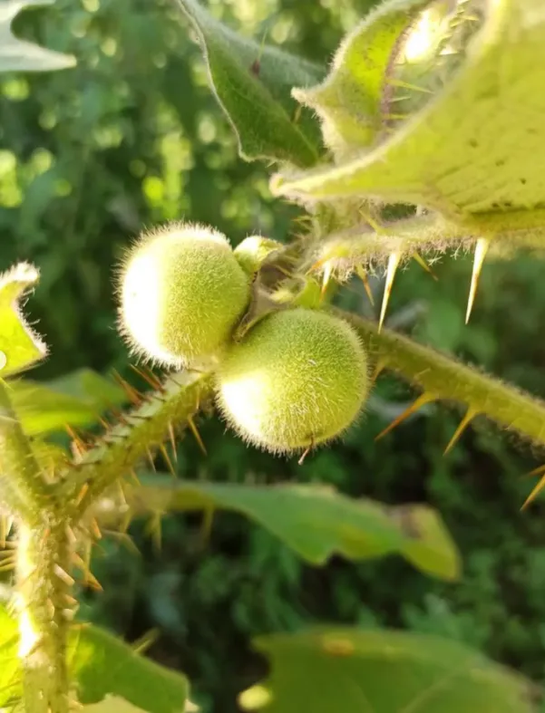

Экзотический плодово-декоративный кустарник с резными листьями и опушёнными плодами. Вкус напоминает смесь ананаса и клубники.
Преимущества культуры для вашего участка.
Каждый сорт уникален — от формы до вкуса.
Наранхилла в разные сезоны: от всходов до сбора урожая.

Всё, что нужно знать о культуре: от посадки до хранения.
Наранхилла — субтропическое растение, требующее особых условий для успешного плодоношения.
Вкус напоминает смесь ананаса и клубники с лёгкой цитрусовой кислинкой. Мякоть сочная, нежная. Полностью созревшие плоды наиболее вкусны.
Да, в контейнере на подоконнике или в теплице. Растение компактное (до 1,5 м), предпочитает полутень и высокую влажность. Важно избегать прямого солнца.
Через 10–12 месяцев после посева семян. Плодоношение длится около трёх лет. В первый год можно получить 100–150 плодов.
Посадочный материал из коллекции Batatchudo и рекомендации по выращиванию.